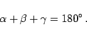

Inhalt
Index
DeskTop Bronstein
Geometrie
Planimetrie
Ebene Dreiecke
Aussagen zu ebenen Dreiecken
Summe zweier Seiten, Summe der Winkel
Die Summe zweier Seiten
ist im ebenen Dreieck stets größer als die dritte Seite:
(
3
.
16
)
Die Summe der Winkel
beträgt im ebenen Dreieck

(
3
.
17
)